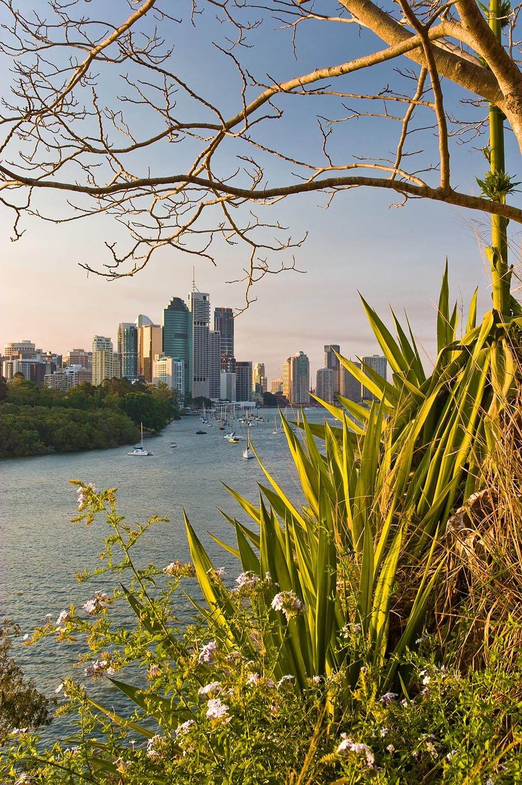
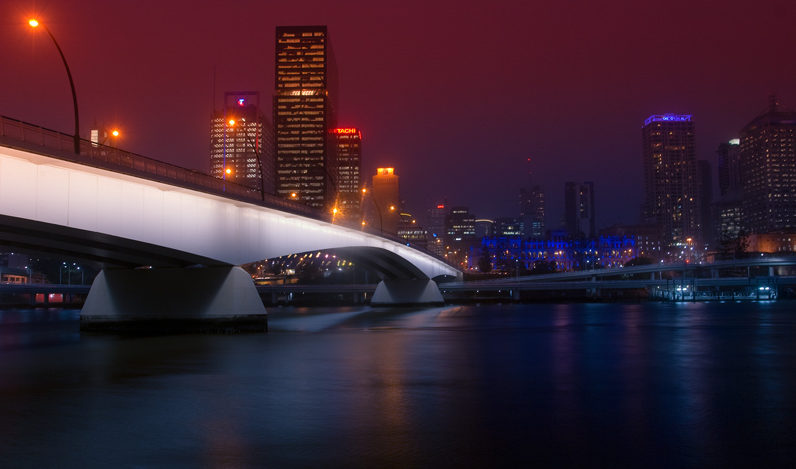
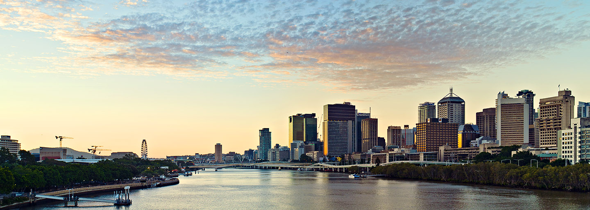
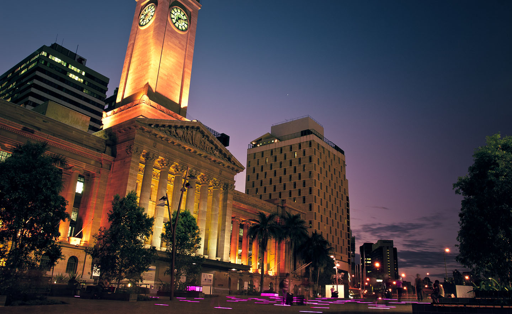
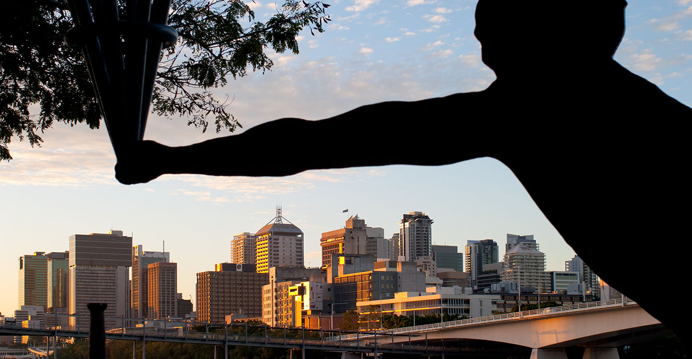
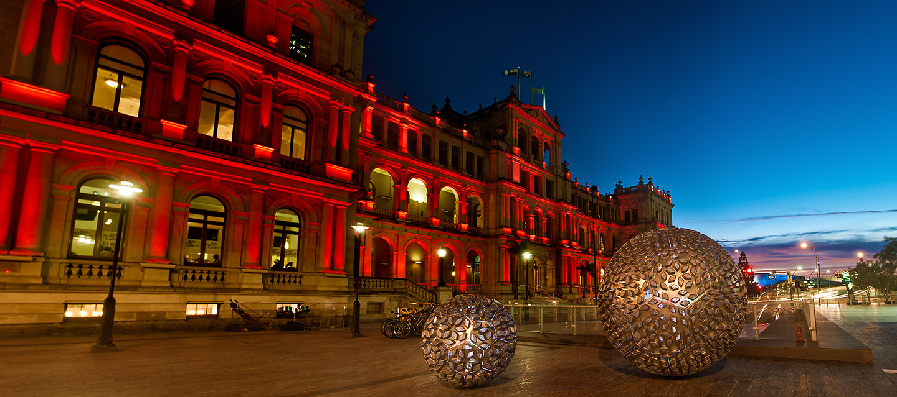
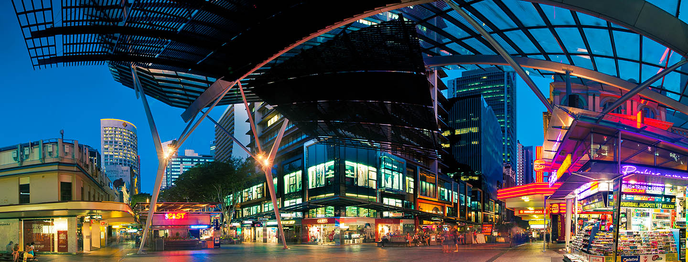
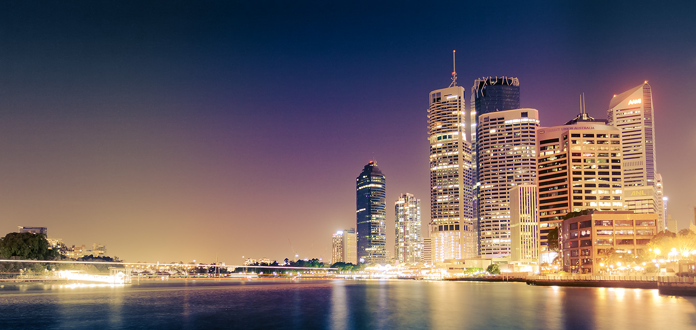

Before the Storm — Brisbane, Australia, 2009
Riverside — Brisbane, Australia, 2009
Purple Haze — Brisbane, Australia, 2009
Acrylic Sundown — Brisbane, Australia, 2011
Royal Purple — Brisbane, Australia, 2011
Torch — Brisbane, Australia, 2011
Treasury — Brisbane, Australia, 2012
Vortex — Brisbane, Australia, 2012
The Singularity Is Near — Brisbane, Australia, 2011